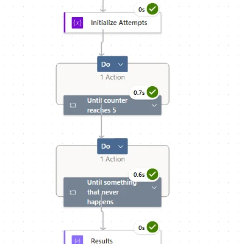
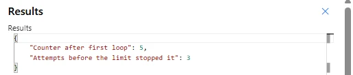

- Power Automate
- Level 5 · Performance and scale · 2 of 6
Do until loops and their limits
Do until repeats its actions until a condition becomes true. It's the right loop when you don't know how many passes you need: waiting for a status, paging through an API, retrying until something is ready. (The basics are in Conditions, Switch and loops; this page is about its limits.)
Two loops: one that finishes, one that doesn't
WhatA loop that checks its stop rule after each pass, with a Count and Timeout safety limit.
WhyWhen a limit stops the loop, it still shows Succeeded. Without a check, the flow carries on as if the job were done.
DemoLoop 1 counts to 5. Loop 2 waits for
equals(1, 2), which is never true, with Count 3.How a Do until ends
Run the actions inside
Is the stop rule true?
Yes
Ends: the job is done
No
Count or Timeout reached?
No
↺ again
Yes
Ends anyway: still Succeeded
The two loops
| Loop | Stop rule | Count | Passes | Ended because | Status |
|---|---|---|---|---|---|
| Counter reaches 5 | equals(variables('Counter'), 5) | 60 | 5 | rule true | Succeeded |
| Something that never happens | equals(1, 2) | 3 | 3 | count reached | Succeeded |
Both show green ticks. Only the first actually reached its goal.


Count and timeout

| Limit | Default | Maximum / format |
|---|---|---|
| Count | 60 | 5,000 |
| Timeout | PT1H (1 hour) | ISO 8601: PT30M 30 min, P1D 1 day |
The loop stops at whichever comes first: the rule, the count or the timeout.
Telling a real finish from a limit
After the loop
Is the stop rule true now?
Yes
Carry on
No
The loop gave up: alert, or Terminate as Failed
Watch out
- When polling, put a Delay inside and make sure count × delay fits the timeout.
iterationIndexes('Loop_name')gives the pass number (from 0).- A failing action inside doesn't stop the loop; it keeps going until a limit.
New to this? Start from the basics optional
Stop rule: checked after each pass, so the actions always run at least once.
Common mistakes
- Trusting Succeeded without checking the rule.
- Polling with no Delay, burning requests.
- Count too low for real-world waits.